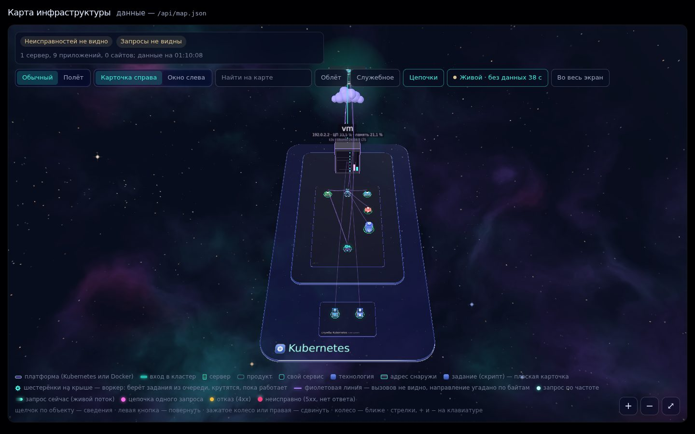
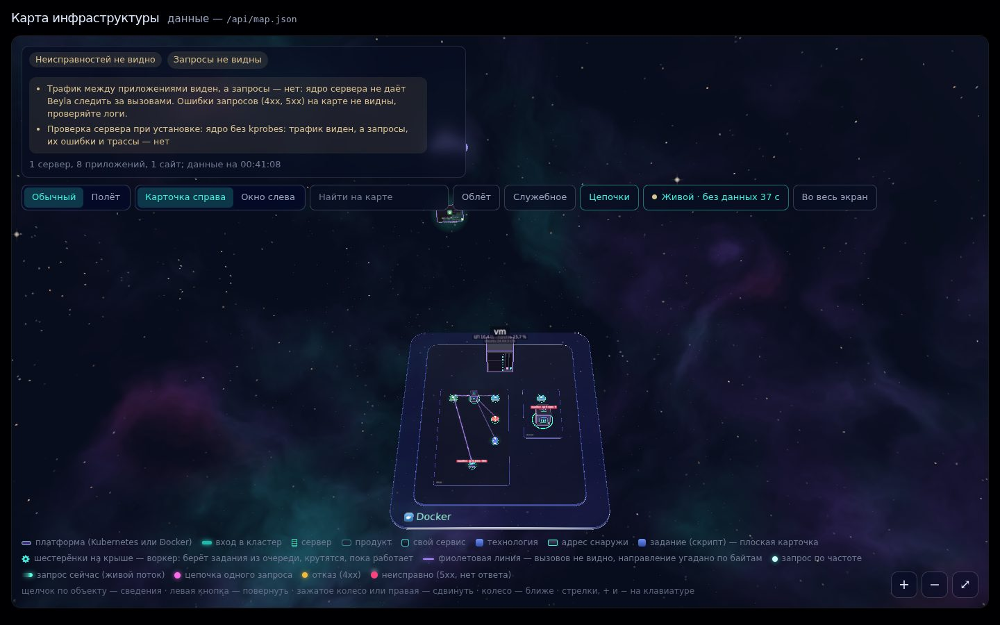

Карта вашей инфраструктуры за две минуты
Одна команда на Docker-хост или в Kubernetes-кластер — и VTM сам находит серверы, приложения, базы и сайты, видит запросы между ними и рисует живую 3D-карту. Ничего не нужно описывать вручную.
$ curl -fsSL https://raw.githubusercontent.com/snemesh/vtm-install/main/install.sh | sh
Запускайте на сервере с Docker или на машине, где kubectl смотрит в ваш кластер. В конце установщик напечатает адрес карты и пароль.

Как это работает
Находит, что работает
Читает Docker (контейнеры, проекты Compose, порты, настройки) или Kubernetes API (поды, сервисы, ingress). Только чтение — в ваших приложениях ничего не меняется.
Видит, кто с кем говорит
Grafana Beyla (eBPF) измеряет трафик и запросы между приложениями прямо в ядре — без агентов в коде, без правки образов.
Рисует и честно говорит
Карта с трафиком, ошибками, логами и цепочками запросов. Если что-то не видно (старое ядро, нет прав), карта так и пишет — вместо «всё работает».
Установка
Docker-хост
Проект на Docker Compose или просто контейнеры на одном сервере.
curl -fsSL https://raw.githubusercontent.com/snemesh/vtm-install/main/install.sh | sudo sh
- Ставится в
/opt/vtm, карта — наhttp://<IP сервера>:8090/ - Нужно: Docker с
docker compose, Linux amd64 или arm64 - ~300 МБ памяти, 1–2 ГБ диска под метрики, логи и трассы
Kubernetes
Любой кластер: k3s, kubeadm, kind, облачный. Нужны права администратора кластера.
curl -fsSL https://raw.githubusercontent.com/snemesh/vtm-install/main/install.sh | sh -s -- --kubernetes
- Helm-чарт в namespace
vtm; helm установщик скачает сам - Карта на NodePort
30890каждого сервера, или LoadBalancer, или Ingress - Чарт отдельно:
oci://ghcr.io/snemesh/charts/vtm
Есть и Docker, и кластер? Установщик спросит, что показывать. Повторный запуск обновляет установку; пароль сохраняется.
Карта не притворяется
Чтобы видеть запросы и их ошибки, Beyla нужны возможности ядра: Linux 5.8+, BTF и kprobes. Установщик проверяет это до установки. Если чего-то нет — трафик между приложениями всё равно измеряется, но карта вместо Всё работает пишет Неисправностей не видно и объясняет, что именно ей не видно и почему.
Проверить сервер, ничего не ставя:
$ curl -fsSL https://raw.githubusercontent.com/snemesh/vtm-install/main/install.sh | sh -s -- --check

Поставить руками ИИ-агента
Откройте Claude Code (или другого агента) в своём проекте и дайте ему одну фразу. Он прочтёт инструкцию, сам поймёт, где работает проект — Docker или Kubernetes, проверит сервер, поставит VTM безопасно (без открытого порта), убедится, что карта видит ваши сервисы, и скажет, как её открыть.
Поставь VTM на этот проект по инструкции https://snemesh.github.io/vtm-install/agent.md
Инструкция для агента: agent.md (то же в репозитории — AGENTS.md). На рабочий сервер агент ставит только после вашего «да».
Параметры
Передаются после sh -s --, например: … | sh -s -- --kubernetes --expose loadbalancer
| Параметр | Что делает |
|---|---|
--docker / --kubernetes | Что показывать, если на машине есть и то и другое |
--version 0.3.0 | Конкретный выпуск; по умолчанию — самый новый |
--port 8091 | Docker: порт карты (8090) |
--bind 127.0.0.1 | Docker: карта только для самого сервера (открывать через SSH-туннель) |
--dir /srv/vtm | Docker: куда ставить (/opt/vtm, без root — ~/vtm) |
--namespace vtm | Kubernetes: namespace |
--expose nodeport | Kubernetes: как открыть карту — nodeport, loadbalancer, ingress=map.example.com, none |
--check | Только проверить, что карта увидит здесь |
--uninstall | Удалить VTM и его данные |
--yes | Ничего не спрашивать, брать значения по умолчанию |
Вопросы
Как открыть карту рабочего сервера, не открывая порт в интернет?
--bind 127.0.0.1 и откройте туннель со своего компьютера:
ssh -L 8090:127.0.0.1:8090 user@serverЗатем откройте
http://127.0.0.1:8090/.Забыл пароль карты
sudo /opt/vtm/vtm.sh password. Kubernetes:
kubectl -n vtm get secret vtm-auth -o jsonpath='{.data.MAP_PASSWORD}' | base64 -dЧто VTM делает с моим проектом?
vtm или namespace vtm) и на карте не показывается.Связь нарисована не в ту сторону
Установка остановилась на «429 Too Many Requests»
docker login и запустите снова.Как обновить или удалить
… | sh -s -- --uninstall (для Kubernetes добавьте --kubernetes) или sudo /opt/vtm/vtm.sh uninstall на Docker-хосте.